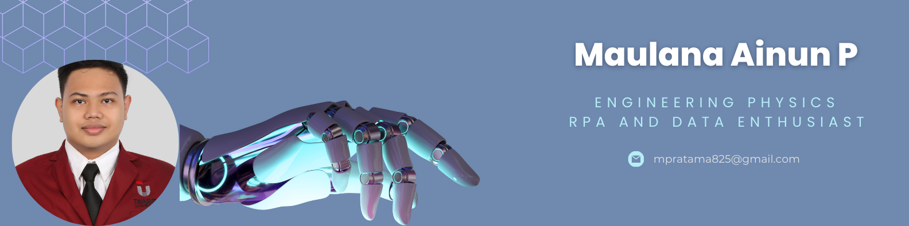

Mari mengenal lebih jauh tentang saya
Lulusan baru dari Teknik Fisika dengan aspirasi tinggi untuk bekerja di industri teknologi, terutama di bidang spesialis data, pembelajaran mesin, dan otomatisasi proses robotik (RPA). Saya telah mengembangkan keterampilan saya melalui berbagai proyek dan pelatihan yang melibatkan teknologi seperti Python, UiPath, Java, dan SQL. Saya memiliki satu tahun pengalaman dalam RPA menggunakan UiPath, meningkatkan kemampuan saya untuk mengotomatisasi tugas-tugas yang berulang dan meningkatkan proses bisnis. Seiring dengan pengalaman organisasi dan magang di bidang administrasi, logistik, distribusi, dan penelitian, saya telah memperkuat keterampilan saya dalam administrasi keuangan, dokumentasi, kepemimpinan, komunikasi, koordinasi, manajemen waktu, dan kerja sama tim, serta mengembangkan pemahaman yang kuat tentang operasi harian yang efisien.
Membuat sistem pendeteksi bakteri menggunakan machine learning menggunakan deep learning dengan metode CNN (Convolutional Neural Network) untuk mengidentifikasi air yang terkontaminasi bakteri E.coli dengan tingkat akurasi yang cukup tinggi yaitu 70%.
Mengumpulkan kultur jaringan dalam bentuk dataset gambar dan menduplikasi dengan menyimpan hasil pengeditan rotasi gambar (90, 180, dan 270 derajat), yang digunakan sebagai dataset uji untuk algoritme pembelajaran mesin tingkat lanjut.
Membuat dan mengumpulkan berbagai kultur jaringan dengan menangkap dan mendokumentasikan hasil eksperimen yang diperoleh dari analisis sumber air yang terkontaminasi, termasuk air sumur, limbah, dan lingkungan tercemar lainnya.
Menangani dan mengelola entri pengiriman barang tunai dan non-tunai, KIA (Kartu Identitas Anak), BPJS, serta memberikan bantuan dalam pendistribusian BST (bantuan sosial) untuk memastikan layanan yang cepat dan akurat.
Berkolaborasi secara efisien dan efektif dalam memuat, membongkar, mengangkut kiriman, memeriksa, dan menyortir setiap barang berdasarkan alamat tujuan masing-masing untuk memastikan pengiriman yang akurat, tepat waktu, dan dapat diandalkan.
Berpartisipasi aktif dalam menimbang, mengkategorikan, menyortir, dan memanifestasikan berbagai macam barang secara akurat sebelum diserahkan ke departemen operasi untuk penanganan lebih lanjut yang efisien dan distribusi yang sistematis.
Minat saya adalah bagian teknologi dan robotik, adapaun untuk hobby adalah mendengarkan musik dan menonton film.
Dalam hal ini akan diisi proyek-proyek yang sudah saya kerjakan sebagai capaian sampai sekarang
Membuat proyek aplikasi kasir supermarket sederhana menggunakan teknologi RPA (Robotic Process Automation) dengan UiPath untuk prases otomatisasi transaksi pembelian, serta membuat rekap hasil otomatisasi penjualan selama satu hari penuh ke dalam file excel.
Merancang aplikasi pengukuran tinggi badan manusia berbasis pengolahan citra dengan menerapkan metode deteksi tepi canny, berhasil mencapai akurasi deteksi berat badan rata-rata yang memuaskan sebesar 95%.
Menerapkan pustaka OpenCV dalam mendeteksi manusia dengan menandai kontur tepi objek sesuai dengan nilai piksel yang terdeteksi pada gambar, mencapai akurasi deteksi yang memuaskan sebesar 94%.
Mengimplementasikan prinsip geometri euclidean pada library python, yaitu "scipy.spatial distance.euclidean" dalam mencari perhitungan ukuran piksel objek yang akan digunakan sebagai acuan ukuran objek tinggi badan manusia.
Merancang aplikasi pembelajaran mesin klasifikasi gambar yang canggih untuk mengidentifikasi gerakan tangan untuk permainan Rock-Paper-Scissors, mencapai akurasi yang mengesankan sebesar 96%.
Menerapkan berbagai model pembelajaran mesin (lapisan), termasuk convolutional untuk ekstraksi fitur, mas pooling, smoothing, dense, dan teknik dropout untuk membuat model pelatihan klasifikasi gambar yang sangat efisien.
Melakukan manajemen dataset dengan membagi menjadi 60% pelatihan dan 40% validasi dari total lebih dari 2.100 gambar, menghasilkan prediksi yang berhasil dan kategorisasi yang akurat dari gambar yang diunggah dalam aplikasi.
Anda dapat menghubungi melalui form berikut.